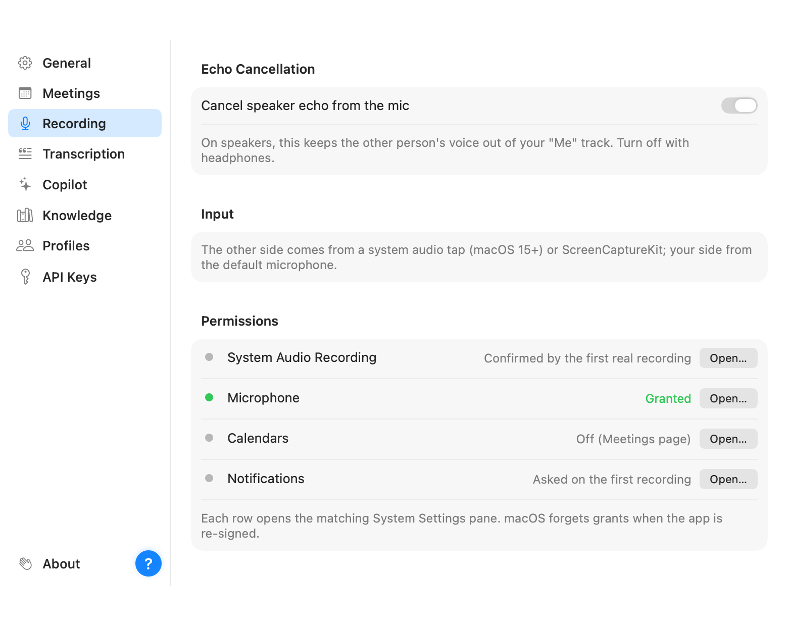
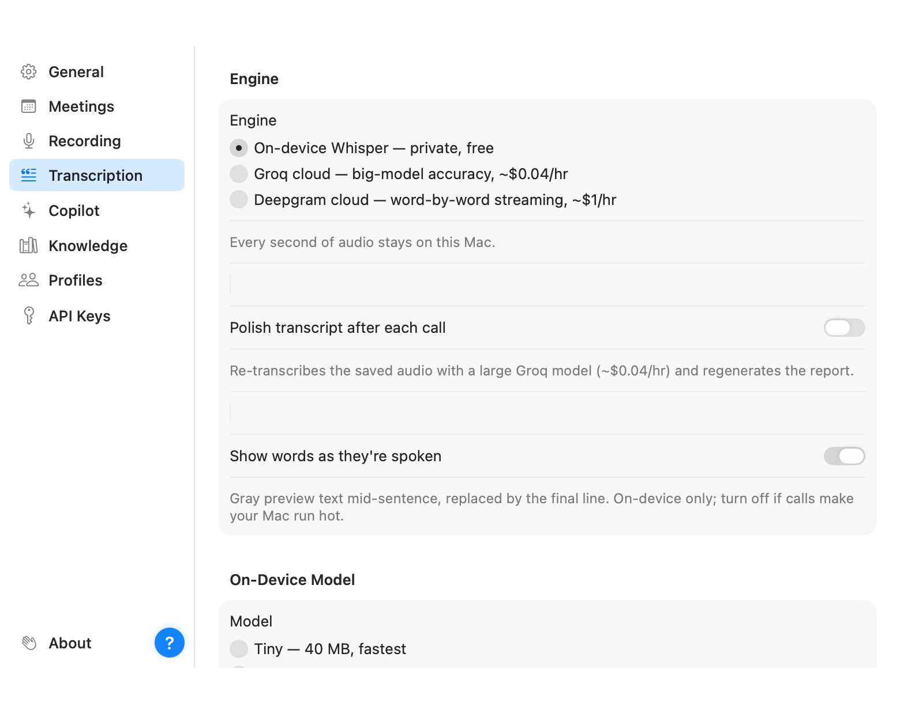
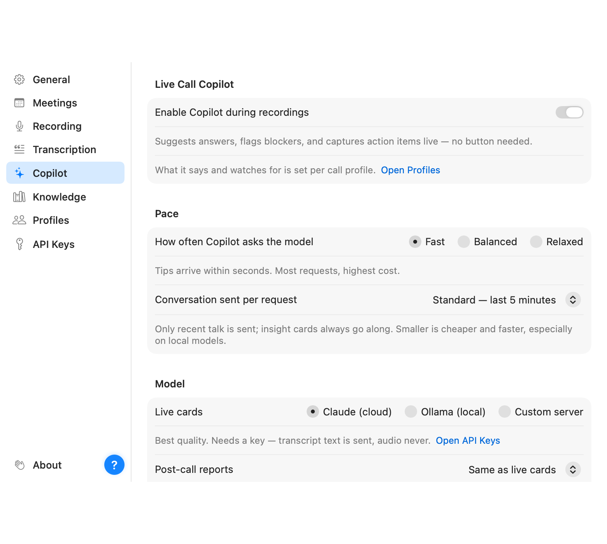

Open Settings from the sidebar (or press ⌘,). Topics are on the left, one page per topic. There's no Save button anywhere: every change is saved the moment you make it, and a small "Saved" chip confirms it.
Appearance (follow the system, or force light or dark), where your audio files live on disk with a "Show in Finder" button, where exported transcripts go (Downloads unless you "Choose Folder…"), an optional "Save a transcript here after each call" toggle that writes a TXT on its own once transcription and speaker detection have finished (right-click a meeting → Export still saves one any time), and the version you're running. Updates take care of themselves: "Keep Parrot up to date" downloads new versions in the background and installs them when you quit, never during a recording, and "Check Now" looks right away. There's also an "Open User Guide" link that brings up this guide, a "Show Welcome Tour" link that replays the first-run setup (permissions and model choice), an About row at the bottom of the topic list (that's me saying hi), and the little question-mark button for the guide too.

One important toggle lives here: echo cancellation. If you take calls on speakers, keep it on; it subtracts the other person's voice from what your microphone hears, so their words don't get written down twice as yours. With headphones there's nothing to cancel and you can turn it off.
Where Parrot learns what a recording is about. "Use my calendar for meeting details" reads the Calendar app on this Mac (your Google Calendar is there as long as it is added to Calendar) after one permission prompt, and from then on a recording that starts during a scheduled meeting takes the event's title, remembers who was invited, keeps the call link, and hands the copilot the agenda as its brief when you typed none. Invitee names show up under the meeting title and as one-click chips when you name a voice. If a cloud copilot is on, the names and agenda travel with the transcript to that provider; with Ollama they stay on the Mac.
Hands-free: "Remind me when a video call is about to start" posts a notification two minutes before each call with a Meet, Zoom, or Teams link, with a Start Recording button on it. "Record scheduled video calls automatically" starts the recording a minute before the call and stops it once the call has ended and been quiet for two minutes, so a meeting that runs long is never cut off. Back-to-back calls become separate meetings; the second call's start ends the first recording. Stopping a recording yourself tells Parrot to leave that meeting alone. Both need Parrot running, so "Open Parrot at login" keeps it in the menu bar from the moment you sign in.

Everything about how speech becomes text:
base is quick, large-v3-turbo is the accuracy
pick on Apple Silicon, and its compressed 626 MB variant is nearly as
accurate while using far less memory. Switching downloads the new model
once.
The on switch for the AI layer, the pace and conversation-window controls that decide what it costs, and which model powers the live cards and the reports (they can be different). This page has its own guide: Setting up the Copilot for the providers and The Copilot during a call for the controls.
Keys for Claude, Groq and Deepgram, one field each. They're stored in the macOS Keychain, not in a file, and never leave the machine except to talk to their own service. Paste, done.
The documents the Copilot may answer from, with per-profile tagging. Full story in Knowledge base.
The deepest page, with its own guide: Call profiles. This is where you shape what the Copilot watches for, card by card.